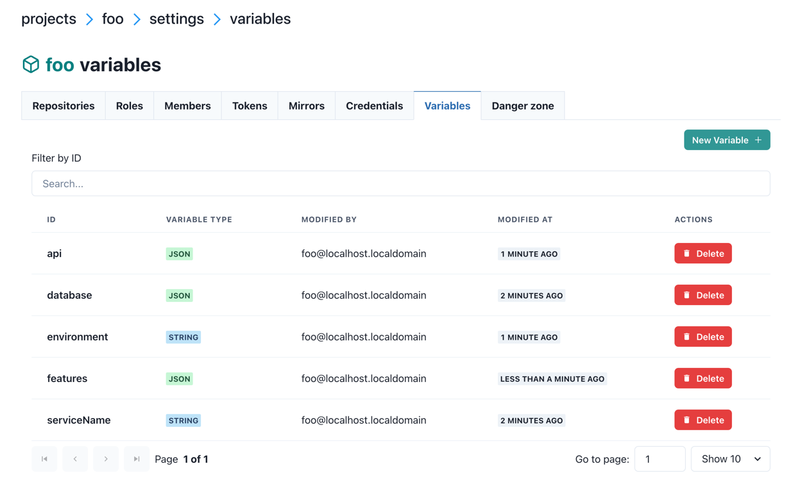
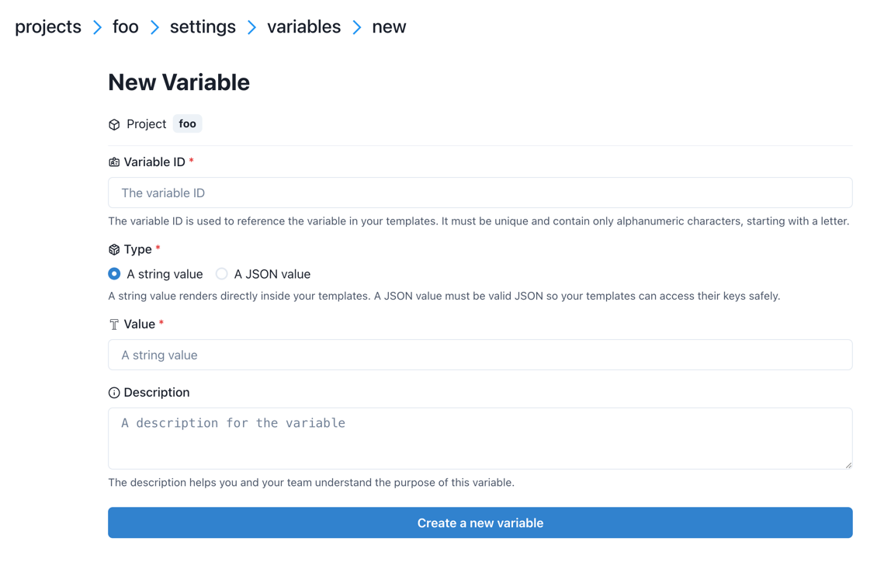
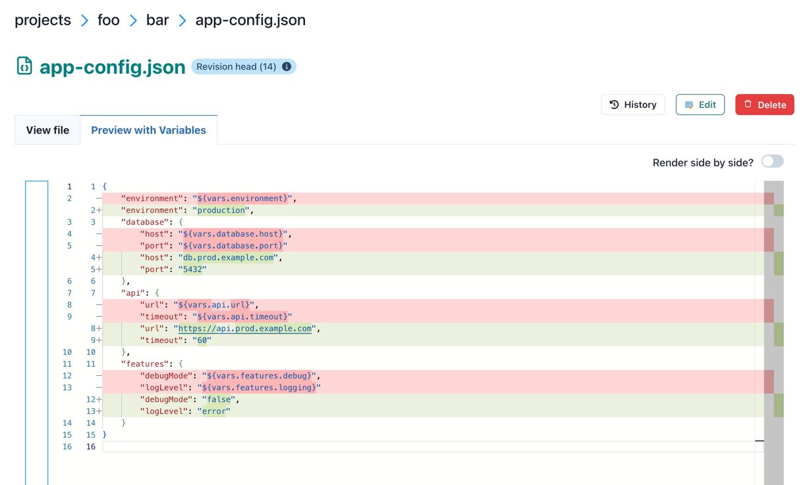

Templates and Variables¶
Central Dogma supports dynamic configuration through templates and variables. Templates allow you to use placeholder syntax in your configuration files, which are then replaced with actual values from variables at runtime. This enables you to:
Manage multiple environments (development, staging, production) with a single template
Centralize common configuration values and reuse them across multiple files
Separate sensitive data from configuration structure
Apply configuration changes without modifying template files
Overview¶
A template is any configuration file that contains variable placeholders using the syntax ${vars.varName}.
When you fetch a file with template rendering enabled, Central Dogma replaces these placeholders with actual
values from variables.
A variable is a named value stored at the project or repository level. Variables can be simple strings or
complex JSON objects. For example, a JSON template file /config.json:
{
"apiEndpoint": "${vars.api.url}",
"timeout": "${vars.api.timeout}",
"debugMode": "${vars.debug}"
}Or a YAML template file /config.yaml:
apiEndpoint: ${vars.api.url}
timeout: ${vars.api.timeout}
debugMode: ${vars.debug}With variables defined as:
api:{"url": "https://api.example.com", "timeout": 30}(JSON type)debug:false(STRING type)
When fetched with renderTemplate=true, the JSON template produces:
{
"apiEndpoint": "https://api.example.com",
"timeout": "30",
"debugMode": "false"
}And the YAML template produces:
apiEndpoint: https://api.example.com
timeout: 30
debugMode: falseVariable Types¶
Central Dogma supports two types of variables:
STRING type¶
A STRING variable stores a text value as-is. When used in templates, the quoting requirements depend on the template file format:
JSON templates: Variables must be quoted to maintain valid JSON syntax
YAML templates: Variables don’t need quotes (YAML accepts unquoted strings)
Example variable:
ID:
serviceNameType:
STRINGValue:
user-service
Usage in JSON template:
{
"name": "${vars.serviceName}"
}Usage in YAML template:
name: ${vars.serviceName}Rendered JSON output:
{
"name": "user-service"
}Rendered YAML output:
name: user-serviceNote
In JSON templates, quotes around "${vars.serviceName}" are required because Central Dogma validates the
template file as valid JSON when storing it. Without quotes, ${vars.serviceName} would be invalid JSON
syntax. YAML templates don’t have this restriction since YAML accepts unquoted strings.
JSON type¶
A JSON variable stores structured data (objects, arrays, numbers, booleans, null). The value must be valid JSON. When used in templates, the quoting requirements depend on the template file format:
JSON templates: Variables must be quoted to maintain valid JSON syntax
YAML templates: Variables don’t need quotes (YAML accepts unquoted strings)
Example variable:
ID:
databaseType:
JSONValue:
{"host": "db.example.com", "port": 5432, "ssl": true}
Usage in JSON template:
{
"dbHost": "${vars.database.host}",
"dbPort": "${vars.database.port}",
"useSsl": "${vars.database.ssl}"
}Usage in YAML template:
dbHost: ${vars.database.host}
dbPort: ${vars.database.port}
useSsl: ${vars.database.ssl}Rendered JSON output:
{
"dbHost": "db.example.com",
"dbPort": "5432",
"useSsl": "true"
}Rendered YAML output:
dbHost: db.example.com
dbPort: 5432
useSsl: trueTip
Jackson converts the quoted JSON values to the proper types when a JsonNode is converted into a Java
object. For example, in the rendered JSON output above, "${vars.database.port}" becomes the string "5432"
in the rendered JSON, but when deserialized into a Java class with an int field for dbPort,
Jackson will automatically convert "5432" to the number 5432.
For more details on Jackson coercions, see
Jackson 2.12 Most Wanted (4/5).
Template Syntax¶
Basic variable interpolation¶
Use ${vars.varName} to reference a variable:
Application: ${vars.appName}
Version: ${vars.version}Nested JSON object access¶
For JSON variables containing objects, use dot notation to access nested properties.
In JSON templates (quotes required):
{
"host": "${vars.database.host}",
"port": "${vars.database.port}",
"endpoint": "${vars.api.url}",
"timeout": "${vars.api.timeout}"
}In YAML templates (quotes not required):
host: ${vars.database.host}
port: ${vars.database.port}
endpoint: ${vars.api.url}
timeout: ${vars.api.timeout}The JSON variable must contain an object with the specified property.
Warning
Avoid using FreeMarker directives like <#if>, <#list>, or <#assign> in JSON or YAML templates.
These directives can break JSON/YAML syntax and make your configuration files invalid when stored.
Stick to simple variable interpolation with ${vars.varName} syntax.
If you need to use FreeMarker directives, use a file extension like .json.ftl or .yaml.ftl instead
of .json or .yaml. Central Dogma does not validate .ftl files as JSON/YAML, so the directives
won’t cause syntax errors during storage.
Variable Precedence¶
Variables can be defined at multiple levels, and they are merged with a specific precedence order. Later levels override earlier levels for variables with the same ID.
Precedence hierarchy (from lowest to highest):
Project-level variables - Available to all repositories in the project
Repository-level variables - Available only within the specific repository
Root variable file (
/.variables.*) - Defined in the repository root directoryEntry path variable file (e.g.,
/configs/.variables.*) - Defined in the same directory as the templateClient-specified variable file - Explicitly specified when fetching (e.g.,
/vars/prod.json)
Example scenario¶
Given these variables:
Project level:
timeout:30region:"us-west"
Repository level:
timeout:60env:"staging"
Root file /.variables.json:
{
"timeout": 90,
"debug": true
}Client-specified file /vars/prod.json:
{
"env": "production",
"debug": false
}When fetching with renderTemplate("/vars/prod.json"), the merged variables are:
timeout:90(from root file, overrides repo and project)region:"us-west"(from project, no overrides)env:"production"(from client file, overrides repo)debug:false(from client file, overrides root file)
Variable Files¶
In addition to project and repository-level variables, you can create variable files in your repository. These are regular files that contain variable definitions in JSON, JSON5, or YAML format.
Supported formats and priority¶
When multiple variable files exist at the same path (e.g., both /.variables.json and /.variables.yaml),
the first file found in this order is used:
.variables.json.variables.json5.variables.yaml.variables.yml
Tip
To avoid confusion, use only one format per directory.
Default variable files¶
Central Dogma automatically looks for variable files in two locations:
Repository root:
/.variables.{json,json5,yaml,yml}Applied to all templates in the repository.
Template directory:
/path/to/.variables.{json,json5,yaml,yml}Applied only to templates in the same directory.
Example /.variables.json:
{
"appName": "MyApp",
"version": "1.0.0",
"database": {
"host": "db.example.com",
"port": 5432
}
}Custom variable files¶
You can also create custom variable files for different environments and explicitly specify which one to use when fetching templates.
Example structure:
/
├── .variables.json # Common defaults
├── vars/
│ ├── dev.json # Development overrides
│ ├── staging.json # Staging overrides
│ └── prod.json # Production overrides
└── config.json # Template file/.variables.json (common defaults):
{
"database": {
"host": "localhost",
"port": 5432
},
"api": {
"url": "http://localhost:8080",
"timeout": 30
}
}/vars/prod.json (production overrides):
{
"database": {
"host": "db.prod.example.com",
"port": 5432
},
"api": {
"url": "https://api.prod.example.com",
"timeout": 60
}
}When you fetch /config.json with renderTemplate("/vars/prod.json"), both files are merged with
production values taking precedence.
Java Client API¶
Rendering templates with file fetch¶
Use renderTemplate(true) to automatically resolve variables from project, repository, and default
variable files:
import com.linecorp.centraldogma.client.CentralDogma;
import com.linecorp.centraldogma.common.Entry;
import com.linecorp.centraldogma.common.Query;
CentralDogma dogma = ...;
// Fetch template without rendering
Entry<String> template = dogma.forRepo("myProject", "myRepo")
.file(Query.ofText("/config.json"))
.get()
.join();
System.out.println(template.content());
// Output: {"serviceName": "${vars.serviceName}", "timeout": "${vars.timeout}"}
// Fetch with template rendering enabled
Entry<String> rendered = dogma.forRepo("myProject", "myRepo")
.file(Query.ofText("/config.json"))
.renderTemplate(true)
.get()
.join();
System.out.println(rendered.content());
// Output: {"serviceName": "user-service", "timeout": "30"}Use renderTemplate(String variableFile) to specify a custom variable file:
// Fetch with custom variable file for production environment
Entry<String> prodConfig = dogma.forRepo("myProject", "myRepo")
.file(Query.ofText("/config.json"))
.renderTemplate("/vars/prod.json")
.get()
.join();
System.out.println(prodConfig.content());Watching templates with Watcher¶
Use Watcher to get notified when templates or their variables change:
import com.linecorp.centraldogma.client.Watcher;
// Watch a template with automatic rendering
Watcher<JsonNode> watcher = dogma.forRepo("myProject", "myRepo")
.watcher(Query.ofJson("/config.json"))
.renderTemplate(true)
.start();
// Get initial value
JsonNode initialValue = watcher.awaitInitialValue().value();
System.out.println(initialValue);
// Listen for changes
watcher.watch(revision -> {
JsonNode newValue = revision.value();
System.out.println("Configuration updated: " + newValue);
});The watcher will be notified when:
The template file itself is modified
Any project or repository-level variable used in the template changes
The default variable files (
.variables.[json|json5|yaml|yml]) change
Watch with custom variable file:
// Watch template with production variable file
Watcher<JsonNode> prodWatcher = dogma.forRepo("myProject", "myRepo")
.watcher(Query.ofJson("/config.json"))
.renderTemplate("/vars/prod.json")
.start();Web UI¶
Permissions¶
The Variable UI requires specific roles:
Project-level variables: Requires
MEMBERrole or higher in the projectRepository-level variables: Requires
WRITErole or higher in the repository
Managing variables¶
You can manage variables through the Central Dogma web interface.
Navigating to variables:
For project-level variables: Go to
/app/projects/{projectName}/settings/variablesFor repository-level variables: Go to
/app/projects/{projectName}/repos/{repoName}/settings/variables
The variables list page shows all defined variables:

Creating and editing variables¶
Click “New Variable” or click on a variable ID to open the variable form:

The form includes:
Variable ID: Alphanumeric identifier starting with a letter. Cannot be changed after creation.
Type: Radio buttons to select STRING or JSON type
- Value:
For STRING: Single-line text input
For JSON: Multi-line textarea with JSON syntax validation
Description: Optional text area to document the variable’s purpose
Previewing templates with variables¶
When viewing a file in the File Editor, the second tab “Preview with Variables” shows the rendered output:

This tab shows:
The file content with all variables resolved
Real-time preview as you navigate between files
Rendering uses all applicable variables (project, repository, and file-level)
Any rendering errors are displayed if variables are undefined or malformed
The preview helps you verify that your templates will render correctly before deploying to production.